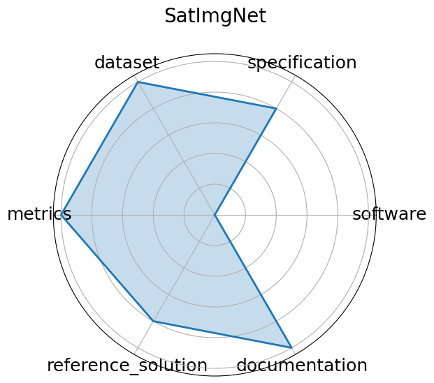

Date: 2023-04-23
Name: SatImgNet
Domain: Remote Sensing
Focus: Satellite imagery classification
Keywords: land-use, zero-shot, multi-task
Task Types: Image classification
Metrics: Accuracy
Models: CLIP, BLIP, ALBEF
Citation:
Jonathan Roberts, Kai Han, and Samuel Albanie. Satin: a multi-task metadataset for classifying satellite imagery using vision-language models. 2023. URL: https://huggingface.co/datasets/saral-ai/satimagnet.
bibtex: ``` @misc{roberts2023satin,
title={SATIN: A multi-task metadataset for classifying satellite imagery using vision-language models},
author={Roberts, Jonathan and Han, Kai and Albanie, Samuel},
journal={arXiv preprint arXiv:2304.11619},
year={2023},
url={https://huggingface.co/datasets/saral-ai/satimagnet}}
```
Ratings:
Software:
Rating: 0
Reason: No scripts or environment information provided
Specification:
Rating: 4
Reason: Tasks image classification across 27 satellite datasets are clearly defined with multi-task and zero-shot framing; input/output structure is mostly standard but some task-specific nuances require interpretation.
Dataset:
Rating: 5
Reason: Hosted on Hugging Face, versioned, FAIR-compliant with rich metadata; covers many well-known remote sensing datasets unified under one metadataset, though documentation depth varies slightly across tasks.
Metrics:
Rating: 5
Reason: Accuracy of classification is an appropriate metric
Reference Solution:
Rating: 4
Reason: Baselines like CLIP, BLIP, ALBEF evaluated in the paper; no constraints specified
Documentation:
Rating: 5
Reason: Paper provides all required information
Average Rating: 3.833
Radar Plot: 